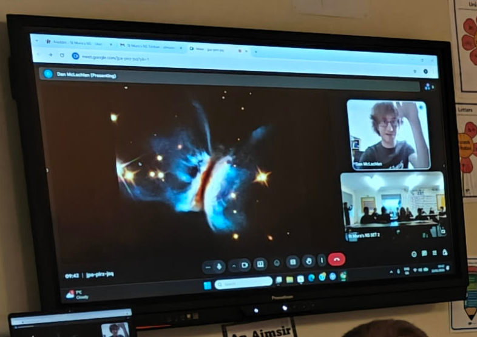
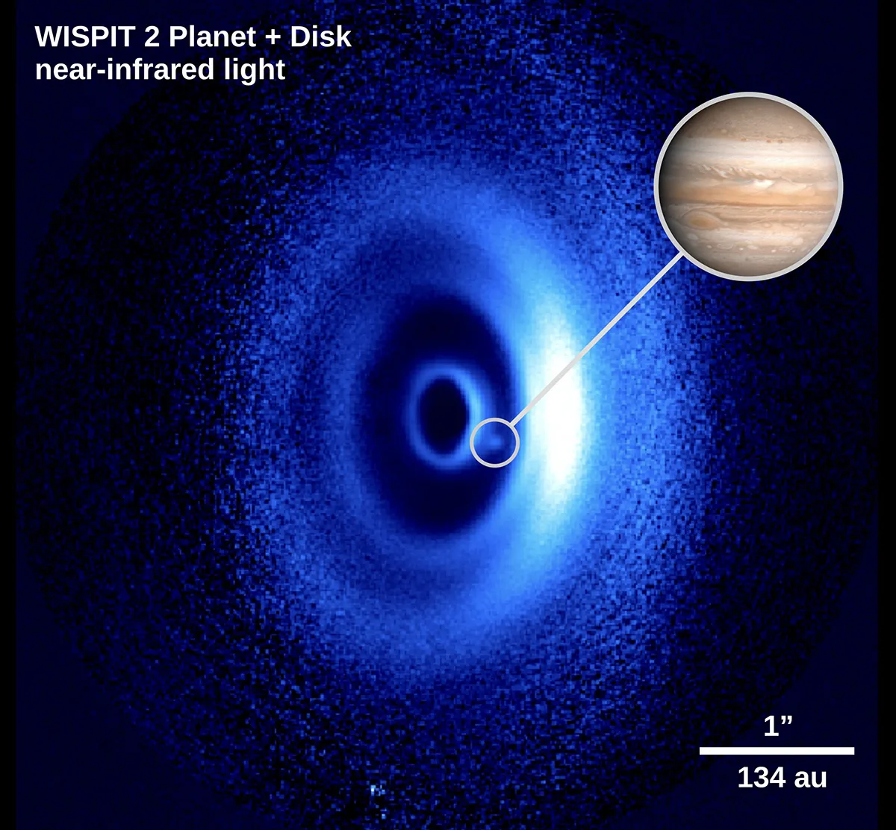
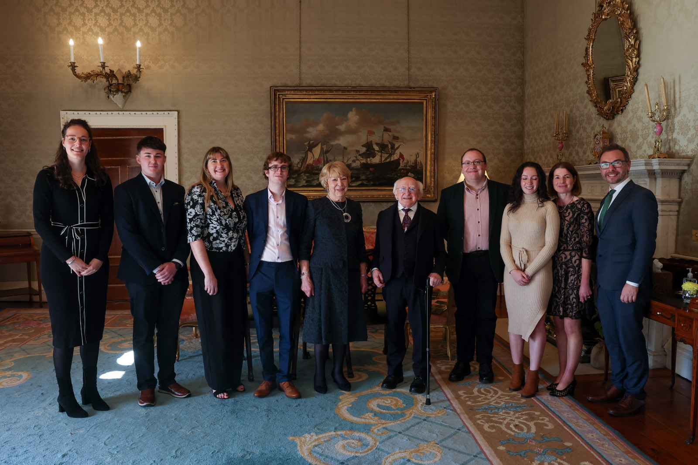

Outreach
Talks in Irish Primary Schools

Discussing the wonderful carefree life of an astronomer with the kids of St. Mura's National School, Donegal. Here I'm showing a wonderful image from Monsch+ 2025 as an example of a protoplanetary disk.I have given a couple of talks about my work (tailored to a younger audience) in Irish primary schools to kids aged 11-12. I've quite enjoyed doing this - it can be a fun exercise in breaking down a complex topic to something that a young person will find cool and interesting. And I hope it plays a part in inspiring the young'uns to maybe consider a career in astronomy! Incidentally if an educator is reading this and is interested in asking me about doing a similar talk, I'm more than happy to oblige! :)
Press Work for WISPIT 2b
Here's some of the ephemera from my time on the press circuit for the discovery of the exoplanet WISPIT 2b!

Image credit: ESO/ van Cappelleveen
An interview I did on Highland Radio Donegal about the discovery:
Audience with the President :o

The WISPIT team meets at-the-time president of Ireland Michael D. Higgins